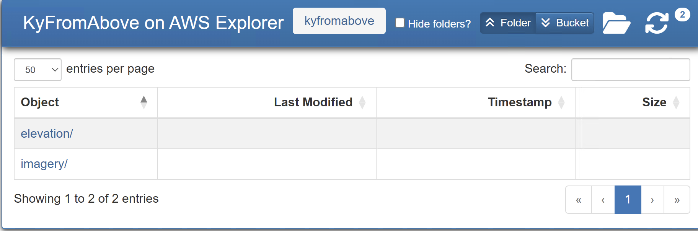
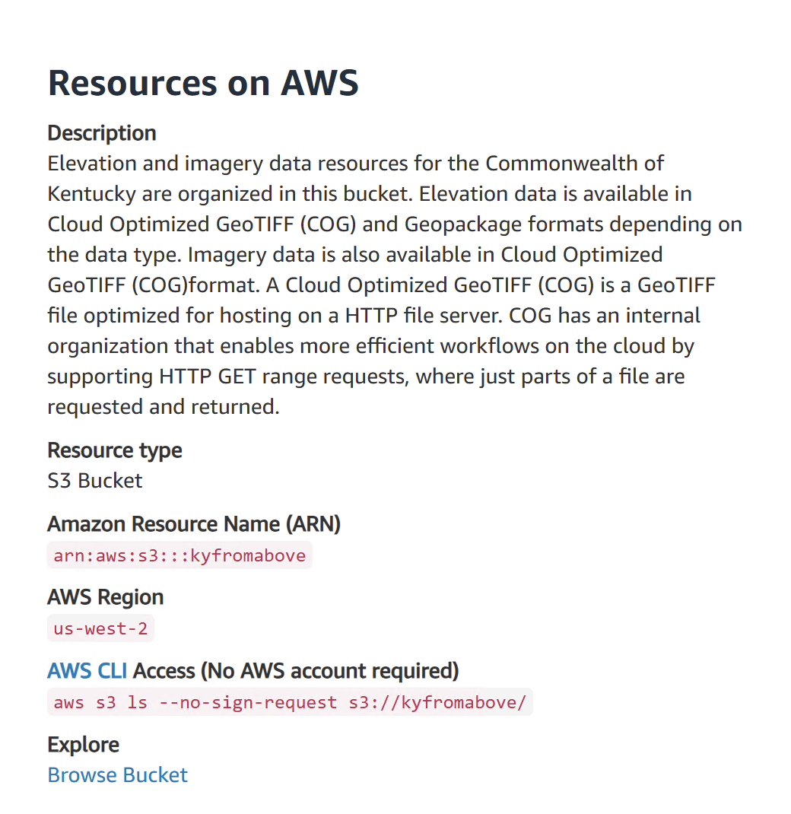

Resources
KyGISServer
https://kygisserver.ky.gov/arcgis/rest/services/WGS84WM_Services
kygisserver is the landing map of our vector-based and cached-map servers. I recommend familiarizing yourself with this page as a great resource.
Open Data Portal
https://opengisdata.ky.gov/
The KyGovMaps Open Data Portal is another great resource for vector data sources. This is also the place you want to visit for Metadata, especially since the KyGeoPortal will retire in October 2025.
KyRaster
https://kyraster.ky.gov/arcgis/
kyraster is landing page for our raster-based services. Products are divided into Imagery and Elevation.
KyFromAbove on AWS Explorer
https://kyfromabove.s3.us-west-2.amazonaws.com/index.html
This is javascript-based Explorer serves the kyfromabove aws bucket as an explorer-like environment. This is a great resource to download files if you already know the name of the file. Also, it also contains links to tile grids in Geopackage formats that can be view in desktop software, python, online viewers, and so on.

Open Data Registry on AWS
https://registry.opendata.aws/kyfromabove/
KyFromAbove's landing page in the AWS Open Data Registry. This page contains descriptions for KyFromAbove products, code snippets to get you started search the bucket with AWSCLI Command Line Interface, links to tools, publications, endpoints, etc.
